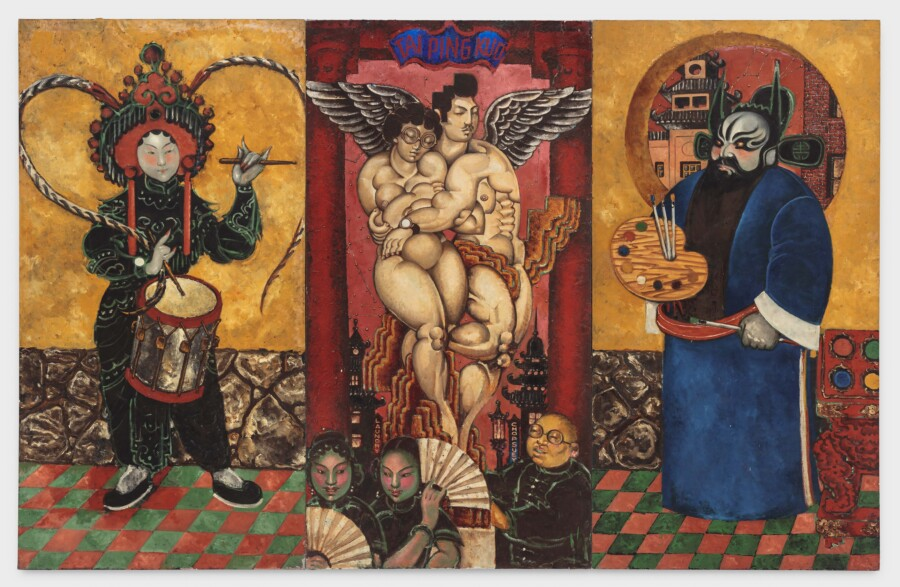

PANEL DISCUSSION: The Diasporic Influences of Martin Wong
The prolific Chinese American painter and poet Martin Wong grew up just outside San Francisco’s Chinatown. Though he never visited mainland China or learned Chinese languages, his work remained deeply informed by the cultural legacies of the Chinese diaspora—drawing on mythic figures from the Warring States period, sacred objects, traditional painting techniques, and Peking Opera. How did these references shape his artistic vision?
Join us for a panel discussion moderated by curator Yasufumi Nakamori, featuring acclaimed art historians Margo Machida and Mark Johnson, for an in-depth exploration of the ancestral and cultural histories embedded in Wong’s work.